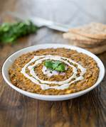

Dal makhani

Description
Dal Makhani is a rich and creamy North Indian dish made with whole black lentils (urad dal) and kidney beans (rajma), slow-cooked with butter, cream, and aromatic spices. Here's a quick recipe you can try at home.
Ingredients
- Whole black urad dal – 1 cup
- Rajma (kidney beans) – 1/4 cup
- Water – 4-5 cups
- Butter – 2-3 tbsp
- Cream – 1/4 cup (optional but recommended)
- Ginger-garlic paste – 1 tbsp
- Onion (finely chopped) – 1 medium
- Tomato puree – 1 cup (or 2 medium tomatoes, pureed)
- Green chili – 1 (slit or chopped, optional)
- Kashmiri red chili powder – 1 tsp
- Turmeric powder – 1/4 tsp
- Garam masala – 1 tsp
- Salt – to taste
- Kasuri methi (crushed) – 1 tsp
- Coriander leaves – for garnish
Steps
- Soak 1 cup urad dal + 1/4 cup rajma overnight (8+ hours).
- Rinse & Pressure cook with 4 cups water and salt for 6–8 whistles (or until soft).
- Heat 2 tbsp butter in a pan.
- Add 1 tbsp ginger-garlic paste and sauté for 30 seconds.
- Add 1 chopped onion and cook till golden.
- Add 1 cup tomato puree, 1 tsp red chili powder, 1/4 tsp turmeric, salt to taste.
- Cook masala until oil starts separating.
- Add cooked dal & rajma to the masala and mix well.
- Add 1–2 cups water as needed for consistency.
- Simmer on low flame for 30–45 minutes, stirring occasionally.
- Add 1/4 cup fresh cream, 1 tsp garam masala, 1 tsp crushed kasuri methi, 1 tbsp butter.
- Simmer for another 5–10 mins.
- Garnish with coriander and a swirl of cream.
- Serve hot with naan, roti, or jeera rice.
Home Page